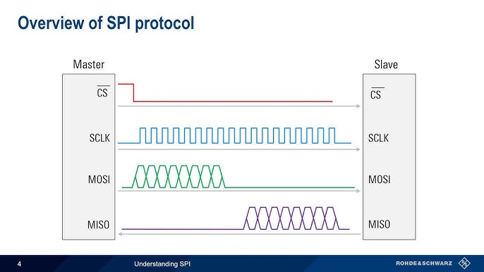
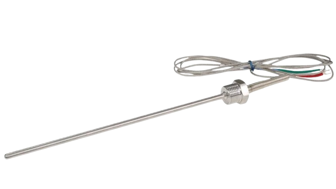

Multi-purpose embedded firmware
Project background
What is MOSFET
Our MOSFET

Where it started ?
Beginnings
reading temperature
static inline int max31856_read_temperature(void)
{
uint8_t src[4], dst[4];
gpio_put(furnace_spi_csn_pin, 0);
spi_write_read_blocking(max31856_spi_instance, src, dst, len);
gpio_put(furnace_spi_csn_pin, 1);
const int32_t ltcbh = (int8_t) dst[1];
const uint32_t ltcbm = dst[2], ltcbl = dst[3];
int temperature = (((uint32_t) ltcbh) << 4)
| (((uint32_t) ltcbm) >> 4);
return temperature;
}
SPI interface
Thermocouple and driver
Getting pwm value from user
err_t tcp_server_recv(void* ctx_, struct tcp_pcb* tpcb, struct pbuf* p, err_t err)
{
if (memcmp(ctx->tcp.recv_buffer, "reboot", 6) == 0) {
reset_usb_boot(0,0);
} else if (sscanf(ctx->tcp.recv_buffer, "pwm %u", &arg_pwm) == 1) {
if (arg_pwm > 15) {
const char msg[] = "pwm argument too big!\n";
const size_t msg_len = sizeof(msg)-1;
tcp_server_send_data(ctx, tpcb, msg, msg_len);
} else {
ctx->pwm_level = arg_pwm;
}
}
return ERR_OK;
}
PWM -> Pulse Width Modulation

PCB -> printed circuit board
Setting pwm to desired value
static inline int set_pwm_safe(furnace_context_t *ctx, unsigned new_pwm)
{
if (new_pwm > MAX_PWM)
return 1;
ctx->pwm_level = new_pwm;
pwm_set_gpio_level(FURNACE_FIRE_PIN, new_pwm);
if (new_pwm == MAX_PWM) {
pwm_set_enabled(FURNACE_FIRE_PWM_SLICE, false);
} else {
pwm_set_enabled(FURNACE_FIRE_PWM_SLICE, true);
}
return 0;
}
Basic code architecture
Little "scheduler"
Main work loop
int main_work_loop(void)
{
furnace_context_t* ctx;
cyw43_arch_gpio_put(CYW43_WL_GPIO_LED_PIN, 1);
while (1) {
const bool deadline_met = get_absolute_time() > ctx->update_deadline;
do_thermocouple_work(ctx, deadline_met);
do_tcp_work(ctx, deadline_met);
if (deadline_met)
ctx->update_deadline = make_timeout_time_ms(1000);
}
return 0;
}
Example task
void do_thermocouple_work(furnace_context_t *ctx, bool deadline_met)
{
if (!deadline_met)
return;
const bool rdy = gpio_get(FURNACE_MAX31856_RDY);
if (rdy)
DEBUG_printf("RDY: %d\n", (int) rdy);
ctx->cur_temp = max31856_read_temperature();
DEBUG_printf("cold: %u\n", max31856_read_cold_junction());
}
First problems
Steering problems
- The pwm value had to be remembered, no way to read the value - Steering pwm by hand was annoying
PID
Seemingly good solution
Proprietary solution
auto-pilot
static void
do_pilot_work(furnace_context_t *ctx)
{
const int min_increase_rate = 1;
const int diff = ctx->cur_temp - ctx->pilot.last_temp;
const int sign = sgn(ctx->cur_temp, ctx->pilot.des_temp);
unsigned pwm = ctx->pwm_level;
ctx->pilot.last_temp = ctx->cur_temp;
ctx->pilot.pilot_deadline = make_timeout_time_ms(CONFIG_FURNACE_DEADLINE_MS);
if(sign*diff <= min_increase_rate)
pwm += sign;
set_pwm_safe(FURNACE_FIRE_PIN, ctx, pwm);
}
Device configuration
.config file
CONFIG_THERMO=ktype
CONFIG_MAGNETRON=0
CONFIG_HOSTNAME="pico_furnace"
CONFIG_WATER=1
CONFIG_FURNACE_FIRE_PIN=21
CONFIG_FURNACE_DEADLINE_MS=21000
CONFIG_MAX_PWM=50
CONFIG_SHUTTER=0
CONFIG_AUTO=pilot
CONFIG_STIRRER=0
Example usage
#if CONFIG_THERMO
do_thermocouple_work(ctx, deadline_met);
#endif
do_tcp_work(ctx, deadline_met);
do_stdio_work(ctx, deadline_met);
#if CONFIG_AUTO == CONFIG_AUTO_PILOT || CONFIG_AUTO == CONFIG_AUTO_MAPPER
do_pilot_work(ctx);
#endif
Another problems
Low oxygen levels inside furnace
Oxide was growing too slow
Need for heat
Problem:
Temperature for other necessary operations was not stable enough, resolution was too high to accurately steer lower temperatures.
Solution:
Another temperature sensor, which handles another temperature values.
Handling different hardware drivers
#if CONFIG_THERMO == CONFIG_THERMO_PT100
#include "max31865.h"
#elif CONFIG_THERMO == CONFIG_THERMO_KTYPE
#include "max31856.h"
#elif CONFIG_THERMO >= 1
#error "Invalid CONFIG_THERMO value"
#endif
Other features
- magnetron
- mapper
- shutter
- stirrer
Magnetron
Shutter

Stirrer v1
Stirrer v2
Thanks for attention !
Kornel Uriasz
SKN MOS